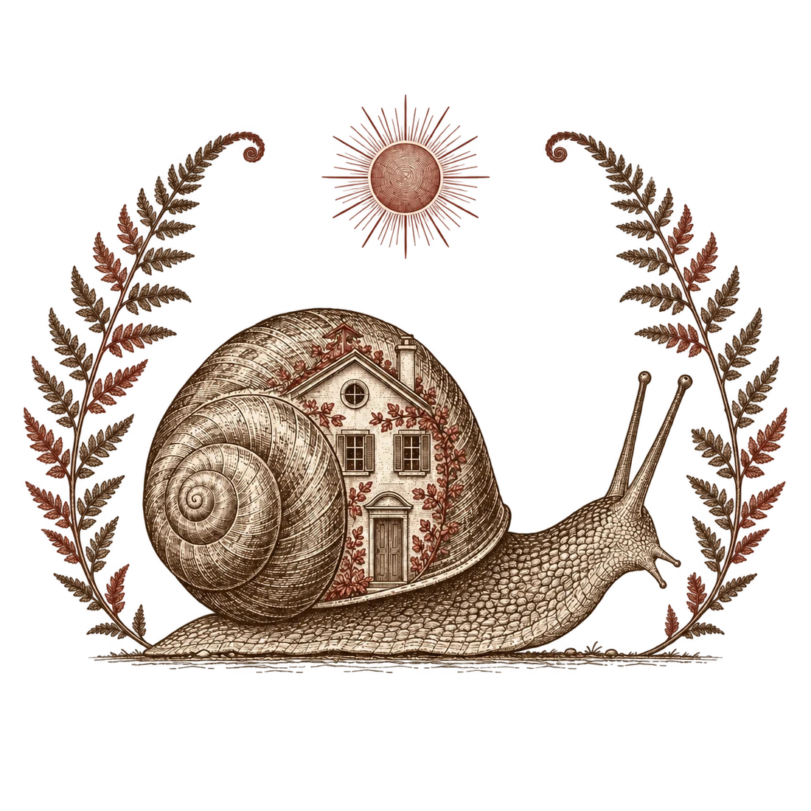
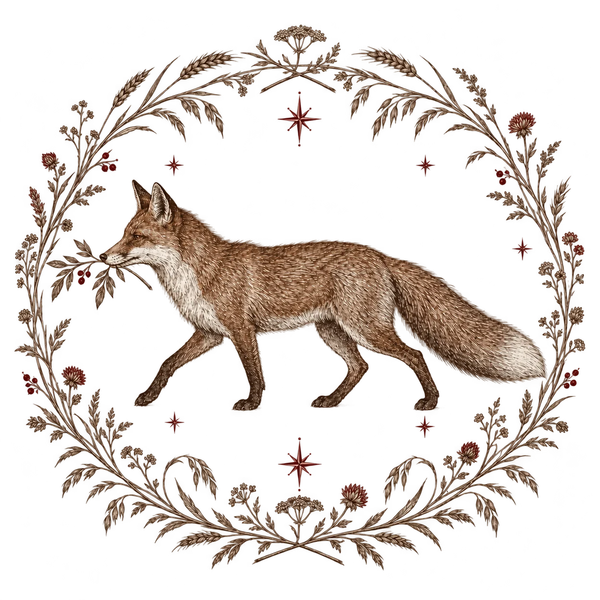
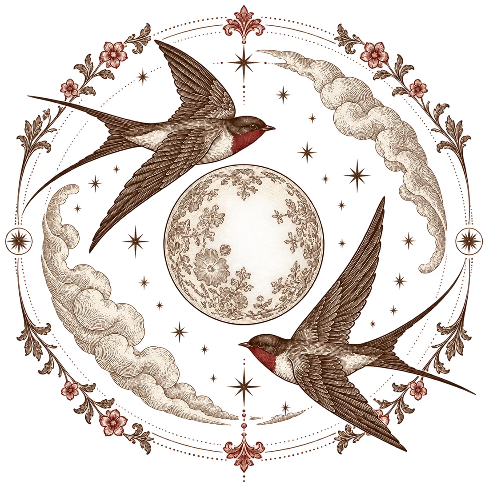
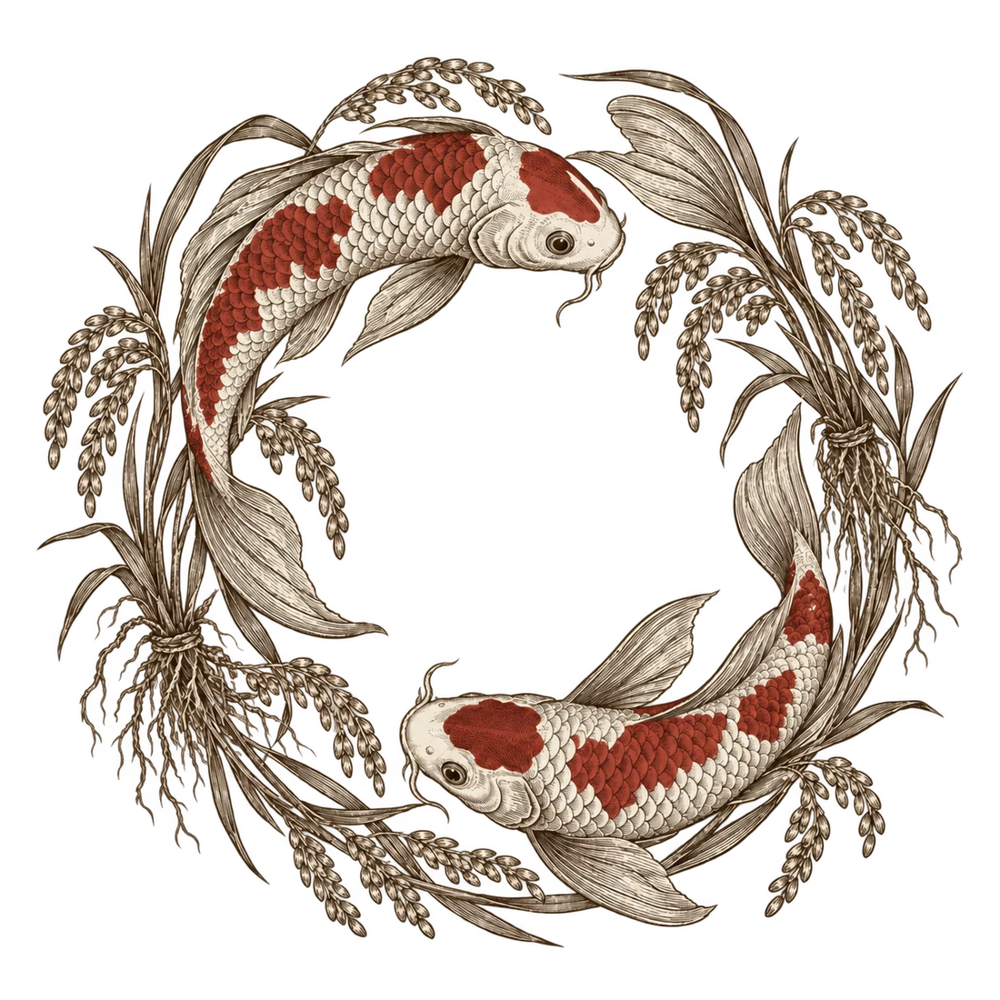
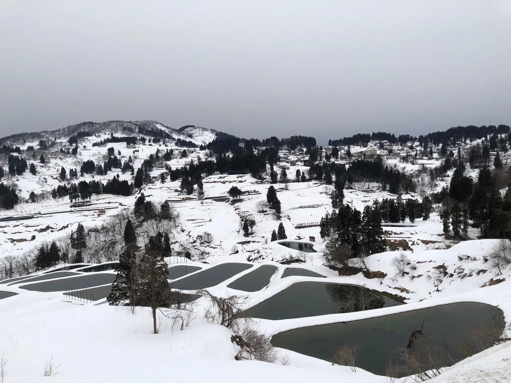
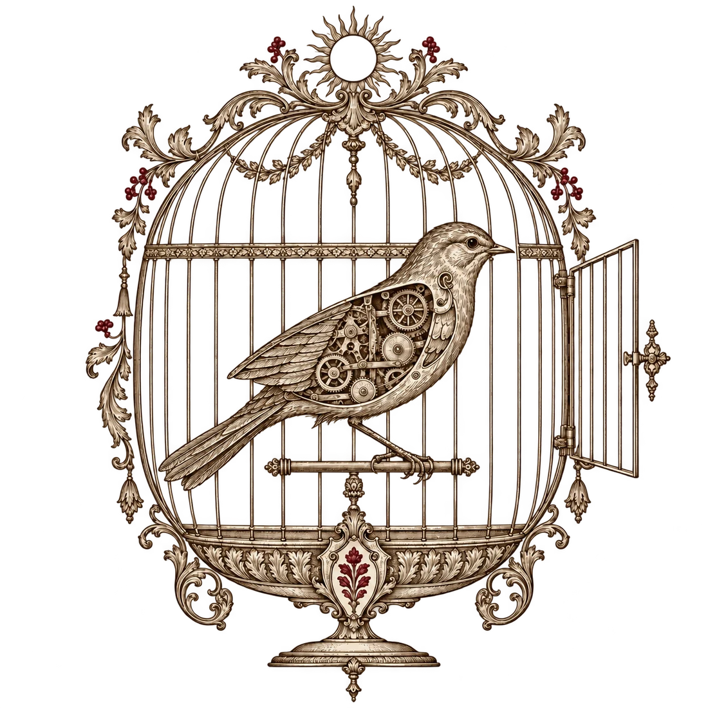

Yen-Lin (mashbean) Huang London · 20 September 2026
Nowhere's Taiwan Across Cities season. Organised by Nowhere Bookshop and Nowhere UK; hosted by Zhi-Hao at Studio 8, 181 Mansfield Road, London NW3 2HP. The event ran 14:00–15:30 London time, with a 45–60 minute talk and about 30 minutes for questions.
The four chapters follow the speaker's supplied outline. The epilogue can be selected according to the time available, or opened directly from the index.
Borderless NomadismCHAPTER I
Two Ways of Living Nomadically in Chiang Mai

I · A TEMPORARY EXIT
Nomadism as Lying Flat
A search shaped by travel and experience

II · STARTING OVER
Nomadism as Reconstruction
An experiment in rebuilding everyday life
The I met in Chiang Mai followed two different impulses.
These are two tendencies I encountered in Chiang Mai, not a census of all digital nomads. One person may move between them at different stages of life.
Borderless NomadismCHAPTER I
Lying Flat as a Consumer Industry
“Turn the whole world ninety degrees and an awkward truth appears: lying flat is standing upright, while those who stand are the ones crawling.”Manifesto of Lying Flat
→→→→
01
High-pressure life
Work, housing costs, involution
02
Lie flat in Chiang Mai
Try a different pace
03
Savings run low
Daily life still costs money
04
Return to the grind
Save enough to come back
CHIANG MAI ⇄ WORK
In my Chiang Mai essay, people came and went while event information remained concentrated on Chinese platforms. 'Unsustainable' was my field judgement at the time, not a verdict on all remote workers; Copium is used here as a metaphor.
Borderless NomadismCHAPTER I
From Dali to Chiang Mai
01
2022 · An event in Dali was shut down
02
They carried on without a central stage
The gathering continued through decentralised coordination
also fed into Chiang Mai
03
Some participants moved to Chiang Mai
Some decided to stay
04
A polycentric community
Conflict appeared, along with a local economy
did not necessarily know one another. Some spent more time in their own Western networks.
Do not turn movement among different communities into an inevitable route. Dali to Chiang Mai describes one group in the essay; 706 Youth Space was another point of origin.
Borderless NomadismCHAPTER II
Home Can Exclude and It Can Push People Out
CHAPTER II / HOME & ELSEWHERE

I
Under the Same Moon
Different places, one shared space
II
Elsewhere in the Mind
In the same place, finding somewhere else to be
Borderless NomadismCHAPTER II
Under the Same Moon
DISTANCE · I
Living abroad, still using WeChat
Language · familiar people news · shared time
DISTANCE · II
A driver in Boston cursing as he goes
Migration · daily life home · emotion
Living in different places while sharing the same social space.
The speaker develops these two cases orally. The deck does not infer the driver's nationality, reason for migration or exact words, and does not treat WeChat use as evidence of a political position.
Borderless NomadismCHAPTER II
Elsewhere in the Mind
ANOTHER KIND OF ELSEWHERE
A daughter of Yunlin her Muslim faith
✦
In the same physical space, the mind finds somewhere else.
PLACE · FAMILY · FAITH · BELONGING
Keywords from the supplied outline are retained for oral explanation. The deck does not invent family reactions, a conversion narrative or the woman's personal history.
Borderless NomadismCHAPTER II
Distant Worlds of Subculture
DLØDM radio station, 2022. Image: Deutsches Museum, Munich
DEUTSCHES MUSEUM · AN ELDERLY AMATEUR RADIO VOLUNTEER
Writing an impossible world together.
Finding one another through reading and writing.
Signals arrive before people ever meet.
Amateur radio predates the internet. It appears here to compare how technologies sustain communities, not to claim that radio began online. The image is the museum's 2022 station photograph, not a record of the speaker's encounter with the volunteer.
Borderless NomadismCHAPTER III
Digital Exiles
CHAPTER III / EXODUS
Household registersHome, borders and rolls
1990sMoving cryptographic tools across borders
2000–10sMoving away from platforms
2020sBuilding an actual place
Borderless NomadismCHAPTER III
Home, Borders and the Household Register
HOW INSTITUTIONS SEE PEOPLE
Once entered on a register, a person enters the reach of government.
: imagining life beyond the register.
01
Enter the register
Make people identifiable
02
Tie people to land
Assign a place of belonging
03
Assign obligations
Tax, corvée labour and administration
04
Draw boundaries
Control entry and exit
This is a conceptual relationship diagram. It does not claim that modern borders, ideas of home and household registration arose simultaneously. Following the cited essay, it asks how institutions identify populations, attach obligations and control movement.
Borderless NomadismCHAPTER III
We Live with Two Identity Systems
I
STATE
Registers · documents public services
They prove who you are and shape which services you can use.
II
PLATFORM
Accounts · logins social life · payments
Friends, work and transactions sit inside. If the account stops, the door closes.
Citizenship and platform accounts have different legal standing. Yet losing either can feel like being shut out of ordinary life.
Platform accounts can function as gateways to identity, but they do not have the same legal status as nationality. The analogy does not equate an account suspension with formal loss of citizenship.
Borderless NomadismCHAPTER III
Three Parts of Digital Identity
ISSUANCE ≠ CUSTODY ≠ USE
01
Identification
An issuer confirms identity
02
Credential
The individual holds the evidence
03
Verification and consent
The individual presents it when needed
Power over data: issuance and revocation
Storage: devices and institutions
Use trails: who can see the records
This is a human-centred design direction, not a claim that every digital wallet meets it. Revocation, backup, redress and verifier-side records must still be assessed case by case.
Borderless NomadismCHAPTER III
Printing Software as a Book
PGP · 1995 · MIT PRESS
Source Code Publication
01
Encryption software
Keep private communications private
02
Export controls
Software faces border restrictions
03
Print the source
C source code becomes a publication
04
Read it back
Printed text becomes software again
wrote their politics into code, and put the code on paper.
The outline's image of a 'PGP key publication project' is retained, but the precise subject is source-code publication, not the release of anyone's private key. Printed source could be retyped or scanned; this case does not prove that every export of cryptographic software was lawful.
Borderless NomadismCHAPTER III
1996: A Declaration of the Independence of Cyberspace
A DECLARATION OF THE INDEPENDENCE OF CYBERSPACE
“We are creating a world that all may enter without privilege”John Perry Barlow・1996
✦
Thirty years later, whose permission do we still need to enter?
Servers, platform rules and network blocks. And bodies that cannot move into cyberspace.
This was a political and cultural declaration, not proof that the internet lacks jurisdiction or physical dependencies. The slide quotes only a short passage; the original sentence continues.
Borderless NomadismCHAPTER III
The Internet Also Forgets
404
2000s–2010s · LEAVING DIGITAL MONOPOLIES
Wretch shut down. Early web pages vanished link by link.
Servers cost money, domains expire and formats age. Staying online has always required care.
Broken page from “The Chinese Internet Is Collapsing Faster Than We Think.” Original image: Yen-Lin Huang
Even an article about digital decay can disappear.
Borderless NomadismCHAPTER III
Elixus: A Tribal Aesthetic Born Online
Kingdom of Piracy website. Original image: Yen-Lin Huang
2001 · KINGDOM OF PIRACY
IRC, blogs and Wistaria Tea House. Online friends also met over tea.
✦
/
PiraGene
Identity, copyright and mutual trust could all become artistic material.
The slide sits in the 2000s–2010s to follow the project's late-1990s origins; it does not move Elixus's founding date to 2000.
Borderless NomadismCHAPTER III
Leaving Social Platforms
VFive keysMove with your people
01
Protocol
Make data portable
02
Association
Membership, commitments and roles
03
Governance
Appeals, decisions and succession
04
Funding
Pay the cost of maintenance
05
Censorship resistance
Remain connected under pressure
offers one route. After moving, someone still has to pay the rent and maintain the commons.
The five keys organise possible routes away from a platform. The point is not a list of replacement services, but how a community survives a change of tools.
Borderless NomadismCHAPTER III
Three Experiments in Putting Down Roots
I
Pop-up city
Take over a place and let online peers live there for a while.
Over the past few years I have encountered several models and spoken with people involved in them. Each offers a different field site.
Borderless NomadismCHAPTER III
Pop-up City: Two Months at Zuzalu
Luštica Bay, where Zuzalu took place. Photo: Cat ThuA ZK course at Zuzalu. Photo: Cat Thu
They lived together, bringing classes, dinners and work into daily life.
✦
2023・MontenegroAbout two months of shared residence and events.
TECHNOLOGY BESIDE DAILY LIFEZK, public goods and health, plus resident-led classes and shared meals.
BRANCHING AFTER THE GATHERINGLater projects continued in different cities.
Edge City・Mu・Frontier Tower
Projects differ in duration and organisation. Resident notes and photographs establish shared living, classes and daily routines at Zuzalu. Frontier Tower is closer to an ongoing space than a typical short gathering and is kept as a boundary case.
Borderless NomadismCHAPTER III
What Remains after the Gathering?
“A hybrid of coworking space, investment fair, youth hostel and reading group.”Yen-Lin Huang · field essay on crypto communities
FOR PARTICIPANTS
Friends, work opportunities and invitations to the next place
FOR LOCAL RESIDENTS
Which relationships and resources can remain a little longer?
I asked Vitalik what happened after Zuzalu. He said it had decentralised, with people continuing in different places.
I asked Vitalik what happened after Zuzalu. His answer was that it decentralised and people continued in different places. This is a conversation recorded in my essay, not evidence of any city's long-term results.
Borderless NomadismCHAPTER III
A Guerrilla Experiment: Amir Taaki
Amir Taaki. Photo: Anastasia Taylor-Lind for WIRED
2015–2016WIRED reported that he spent about fifteen months in the Middle East.
AFTER LEAVING THE FRONTHe taught local people to use open-source software and the internet, and worked on a fertiliser factory and solar research.
WORK LEFT BEHINDHe also helped design the technology curriculum for a new education system.
The report documents what he did. Public sources do not establish whether the courses or tools continued.
The speaker's essay provides the context for Taaki's involvement in Rojava; WIRED's 2017 report supplies checkable details. Long-term use of the work remains unverified. An imprecise claim about diplomatic recognition was removed, and the place name was corrected to Rojava.
Borderless NomadismCHAPTER III
Two Routes to Digital Voting: Rarimo × Vocdoni
Freedom Tool diagram: official Rarimo documentation
RARIMO · FREEDOM TOOL
Prove eligibility, then vote privately
A phone reads a biometric passport. A confirms eligibility without revealing the passport data. Officially listed projects include Russia2024, Iranians Vote and United Space.
Vocdoni case study graphic: Generalitat de Catalunya
VOCDONI · CATALUNYA
Make digital votes publicly verifiable
The Government of Catalonia lists Vocdoni as a blockchain success case offering decentralised, universally verifiable voting infrastructure.
: Rarimo
centres passport eligibility and privacy proofs; Vocdoni is a separate digital voting tool.
The speaker's intended case is retained. Rarimo's passport and zero-knowledge architecture can be verified, but the referenced Catalonia event could not. The diagram shows the general Freedom Tool flow, not a verified Catalan vote.
Borderless NomadismCHAPTER III
Turning an Idea into a Place
BALAJI SRINIVASAN
Network School exhibition space, Forest City, 2026. Photo: Zamzahuri Abas for CNA
01
Network community
Begin with a shared identity
02
Pool resources
Money, skills and supporters
03
Live together
Network School
04
Rules for daily life
Put them into practice in one building
The sovereign vision of a network state remains a proposal, not an accomplished fact.
Network School is presented as an example from the speaker's essay. The network-state sovereignty proposal is not described as an accomplished fact.
Borderless NomadismCHAPTER III
Do Libertarians Exercise Together?
NETWORK SCHOOL · A FRIEND'S ACCOUNT
“I still cannot imagine a group of ‘libertarians’ doing morning exercises together.”Yen-Lin Huang
✦
I
Living together
Morning exercises, housing disputes and complaints voiced in public.
II
“Let a hundred flowers bloom”
A friend used the phrase to describe people being expelled after feedback was invited.
III
Who gets to stay?
When organisers control the space, what choices remain for dissenters?
This account comes from a friend of the speaker and has not been independently verified.
A friend used 'Let a hundred flowers bloom' to describe an experience in which feedback was invited and someone was then expelled. When presented, it remains attributed hearsay rather than a verified general policy; the political analogy is not treated as historical equivalence.
Borderless NomadismCHAPTER IV
Where Is Home?
CHAPTER IV / PUTTING DOWN ROOTS
Rural regeneration Yamakoshi Village relationship population


Snow in Yamakoshi Village. Photo: Pao-Cheng Chang
Borderless NomadismCHAPTER IV
Can People Far Away Become Villagers?
Taiwan team displaying a Nishikigoi NFT. Original image: Nishikigoi NFT Discord
More than a single visit, without immediately moving in.
An artwork and a chat group become the start of a relationship with Yamakoshi.
The co-authors spent half a day in the village. 'Relationship population' is an analytical frame; holding an NFT does not by itself make someone an active participant or legal resident.
Borderless NomadismCHAPTER IV
Someone Must Move between the Network and the Village
They know the place and can work with outside resources
01
Notice and join
First encounter with Yamakoshi
02
Participate together
Discussion, proposals and resources
03
Local implementation
People who know the village take over
04
Keep responding
Bring everyday needs back into the network
Borderless NomadismCHAPTER IV
A Digital Association for People Abroad?
US
01
Funding
What do we support together? Who pays the long-term cost?
02
People
Connect expertise. Share the work.
03
Knowledge
Do not leave experience buried in chat rooms that vanish from view.
04
Institutions
Someone decides and someone succeeds them. New people can still enter.
Funding, people, knowledge and institutions come from the supplied outline. This is an open discussion frame, not a claim that a formal association already exists.
Borderless NomadismEPILOGUE · TWO VISIONS OF THE FUTURE
A Future Ruled by Machines
TWO VISIONS OF THE FUTURE I · 1995 · §173
“At that stage the machines will be in effective control.”Ted Kaczynski
“At that stage the machines will be in effective control.”
English original
The essay is included for critical reading. This deck rejects the author's violence.

The quotation opens a question: when life depends on machines, can people still alter the goals of the system? The deck separates critical reading of the text from the author's violence.
Borderless NomadismEPILOGUE · TWO VISIONS OF THE FUTURE
If work no longer brings people together, what would make us seek one another out?
ENGLISH EDITIONThe Naked Sun, English edition: Penguin Random House
TRADITIONAL CHINESE EDITIONRobot Series II: The Naked Sun, Traditional Chinese edition: Owl Publishing House
The novel first appeared in 1957. The English image is a current publisher edition, not the first edition. This is a literary setting; it should not be merged with the later Solarian setting in Foundation and Earth or casually labelled a utopia.
Borderless NomadismEPILOGUE · NOTES ON WORK
01 | How Much Work Is Enough?
DANIEL SUSSKIND
Work remains. What about wages?
Susskind asks how machines gradually take over tasks. Jobs need not disappear for wages to fall or hours to become unstable. Income, status and meaning can all weaken.
PAST: new tasks offset displacement.
FUTURE: machines may take the new tasks too.
Leontief's horses are an analogy for substitution, not proof that people must be excluded from work altogether.
Borderless NomadismEPILOGUE · NOTES ON WORK
02 | A Job Is a Bundle of Tasks
ONE JOB
ObserveDiagnoseOperateRecordCoordinateJudge
Illustrative tasks, not a list for any one occupation
A
Machines take over some tasks. Demand for people may fall.
B
Complementarity
Productivity and demand can rise. New sectors and tasks may appear.
Changing a job task by task does not require artificial general intelligence.
PlaceOpportunity is concentrated and moving is costly
STRUCTURAL LACK OF DEMAND
There is no job on the other side
Even after retraining, the market may still need less human labour.
More goods and services do not guarantee more opportunities for people to work.
Remote work and nomadism loosen the constraint of place. Skills, care and income distribution remain unresolved.
Borderless NomadismEPILOGUE · NOTES ON WORK
04 | Who Receives the Prosperity Machines Create?
HUMAN CAPITAL
Skills · experience · knowledge
People share in gains through wages. Demand and pay may still fall.
△
OTHER CAPITAL
Machines · land · equity · data
Asset owners may capture a larger share of new gains.
Susskind's response
Share income and capital, protect labour, curb concentrated technology power and build public institutions for leisure.
: should care and community contributions count as income-bearing activity, and who decides?
Borderless NomadismEPILOGUE · NOTES ON WORK
05 | What Might Less Work Make Possible?
SRNICEK & WILLIAMS
Learning, making and care. Politics, friendship and play.
✦
Post-work politics seeks the power to refuse bad work. Selling less time does not mean doing less with life.
requires income, time and public services. Individual courage is not enough.
Borderless NomadismEPILOGUE · NOTES ON WORK
06 | How Does an Event Become Lasting Power?
SRNICEK & WILLIAMS
They criticise : short, local and direct action can bring people together, but cannot by itself change larger institutions.
01
Shared horizon
Name a future worth pursuing
02
Build organisations
Communities, media and unions
03
Broaden alliances
Connect political organisations with public debate
04
Sustain pressure
Policy, investment and public institutions
Pop-up cities face the same question: when people disperse, can the work continue?
The associated material contrasts long-term neoliberal intellectual and organisational work. The slide borrows the strategic question without declaring every local organisation a failure.
Borderless NomadismEPILOGUE · NOTES ON WORK
07 | Post-Work Demands and Their Diverging Paths
FOUR CONNECTED DEMANDS
01Automate necessary labour
02Shorten the working week
03A basic income sufficient to live on
04Loosen the work ethic
THE PATH CAN BEND
Rich countries may take the gains while poorer countries continue low-paid work.
More machines can increase energy use and ecological costs.
Men may work fewer paid hours while women continue unpaid care.
✦
The authors' account of liberation includes global, gender and ecological justice.
Borderless NomadismEPILOGUE · NOTES ON WORK
08 | What Counts as Pro-Worker AI?
ask whether professional value, pay and autonomy rise together.
I
Augment labour / capital
Efficiency rises. Distribution remains unsettled.
II
Automation
Machines take over tasks. Demand for people may fall.
III
Level expertise
Novices gain access. Existing expertise may lose value.
IV
Create new tasks
New work appears that needs human judgement and expertise.
Higher output and fewer clicks do not answer the question.
This summarises Building Pro-Worker AI. It is an analytical framework and an authorial argument, not an automatic score applicable to every tool.
Borderless NomadismEPILOGUE · NOTES ON WORK
09 | One Technology, Three Possible Designs
AI FOR AIRCRAFT MAINTENANCEThree hypothetical designs, not a sequence of progress
Assistive cases already exist in electrical work, teaching, patent review and accessibility. Deployment can also move towards central surveillance.
The three aircraft-maintenance tools are hypothetical designs from the source parable, not products claimed to be on the market. The animation presents them in sequence while the caption states that they are parallel directions.
Borderless NomadismEPILOGUE · NOTES ON WORK
10 | Questions to Carry Forward
People
Which abilities remain with me after I use the tool?
Labour
Who receives the new tasks, income and gains?
Community
Who can change the rules, and who gets excluded?
Institutions
Who designs, buys and manages the system, and to whom are they accountable?
These authors disagree about markets, political actors and even the future of work itself.
✦
PEOPLE · LABOUR · COMMUNITY · PLACE · WORLD
The slide retains the agreements and disagreements on source pages 53–54 and the four layers of questions on pages 55–59. It also returns the epilogue to overseas digital association: common life requires maintainers, participants and people able to change institutions.